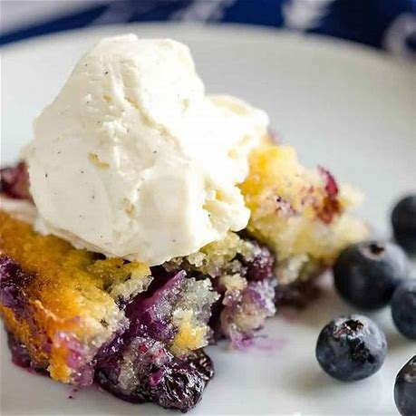

Blueberry Cobbler

Description
This easy blueberry cobbler is about to become one of your absolute favorite easy dessert recipes!
I'm a huge blueberry fan and this blueberry dessert does not disappoint!
It's so ooey gooey, moist, sweet, and oh so delicious! After it bakes, you get a slightly crispy edge (which is my favorite part!)
Ingredients
- 1 cup self-rising flour
- 1 ¼ cup sugar, divided
- 1 cup 2% milk
- ½ cup salted butter, melted
- 1 teaspoon vanilla extract
- 2 cups fresh blueberries
Steps
- Preheat oven to 350F degrees. Spray a 9 x 9 square baking dish with nonstick cooking spray and set aside.
- In a medium bowl, stir together the flour with 1 cup of the sugar. Add in the milk and then pour in the melted butter and vanilla extract. Stir until combined.
- Spread mixture into a prepared baking dish and top with blueberries. Sprinkle with remaining sugar.
- Bake on the middle oven rack uncovered for 45 minutes - hour, until the top is a light golden brown and a toothpick comes out clean.
- Allow to slightly cool before serving. We love ours topped with additional blueberries and a scoop of vanilla ice cream! Enjoy!